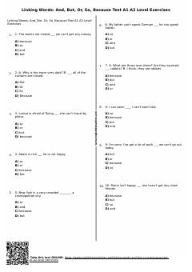

4LIngliz tilidagi asosiy bog'lovchilar bo'yicha A1-A2 darajasidagi test mashqlari.
Ushbu qo'llanma A1-A2 darajasidagi ingliz tili o'rganuvchilari uchun bog'lovchi so'zlarga (and, but, or, so, because) bag'ishlangan amaliy test mashqlarini o'z ichiga oladi. Kitobda olingan bilimlarni tekshirish uchun javoblar kaliti ham berilgan.